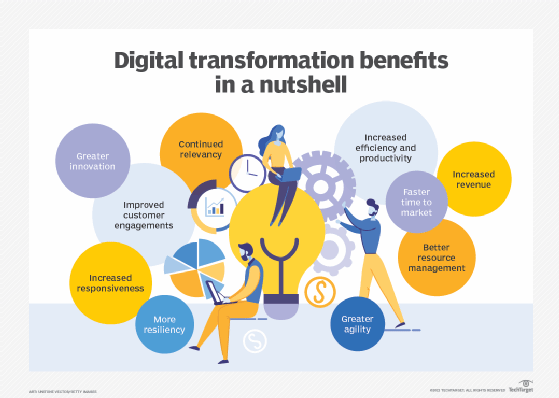

A "fully digital enterprise," as described by Banerji in 2019
A "fully digital enterprise," as described by Banerji in 2019, refers to an organization that has achieved a high level of integration between its business units and stakeholders through the use of a common digital infrastructure. In such an enterprise, digital technologies are extensively utilized to enable efficient management and seamless sharing of data across various functions and departments.
To determine the level of digitization within an organization, several experts have established frameworks. In many cases, a digital enterprise is characterized by having fully data-driven processes, operations, and strategies. This means that the organization relies heavily on digital data and analytics to drive decision-making and optimize its performance.
In a fully digital enterprise, traditional manual or paper-based processes are minimized or eliminated, and digital tools and technologies are leveraged to streamline operations, enhance productivity, and improve customer experiences. These technologies can include cloud computing, big data analytics, artificial intelligence, the Internet of Things (IoT), automation, and other digital platforms and solutions.
The concept of a fully digital enterprise emphasizes the importance of digital transformation, which involves adopting digital technologies and reimagining business processes to create value, gain competitive advantage, and adapt to changing market dynamics. By embracing a digital-first approach, organizations can harness the power of technology to drive innovation, improve agility, and unlock new business opportunities.
References
Banerji, S. (2019). The Fully Digital Enterprise: Reinventing Business Models for the Digital Age. Retrieved from: https://www.genpact.com/insight/blog/fully-digital-enterprise
Kraft, P. (2022). Digital Enterprise Transformation: A Framework for Digital Business. Routledge.
Rumpenhorst, M. (2016). Digital Enterprise: How to Reshape Your Business for a Connected Future. Kogan Page.